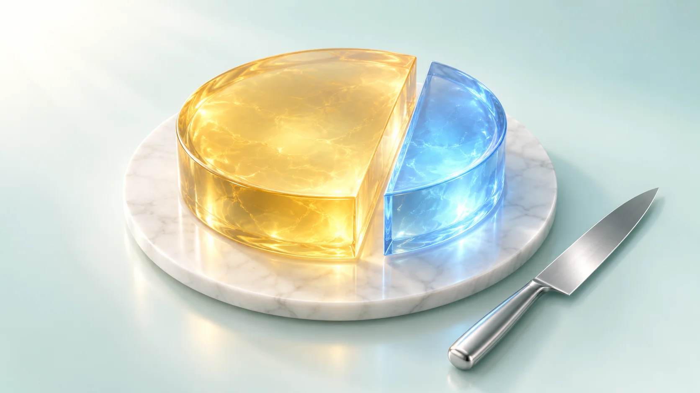
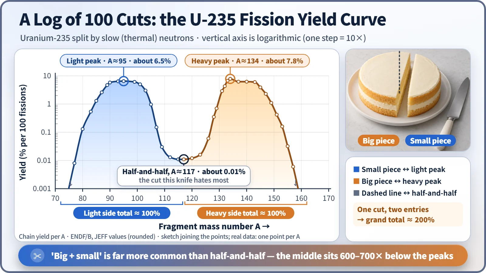
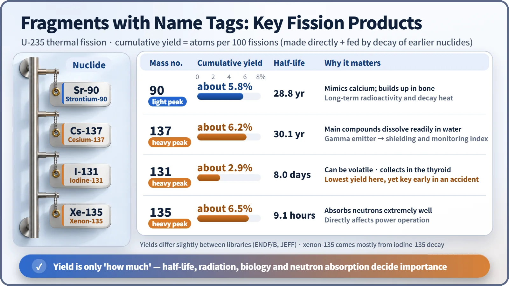

Nuclear Reactions & Fission · 045
The Strange Knife That Won't Cut Down the Middle — How to Read the Fission Yield Curve
An even split is one of the rarest outcomes of fission. Two peaks, a deep valley and a 200% total explain what ends up inside spent fuel.

The fission yield curve records how often fragments of each mass number appear per 100 fissions. For uranium-235 split by slow neutrons it has two peaks of about 6–8%, near mass numbers 95 and 134, and a deep valley of only about 0.01% at an even split. Because every fission makes two pieces, the yields add up to about 200%. [1]
A knife that won't cut down the middle
Imagine a very odd knife. You line it up with the exact center of a cake, but it keeps splitting the cake into one big piece and one small piece. Cut a hundred cakes and write down the results, and something stranger shows up: an even split almost never happens, and the big piece comes out about the same size every time.
This is exactly what happens when a uranium-235 nucleus splits, and the graph of this "cutting log" is the fission yield curve.
A ledger of 100 splits and 200 pieces
When uranium-235 swallows a neutron and splits, two pieces come out. These fission products aren't the same pair every time: hundreds of different nuclei turn up. So physicists keep a ledger of which size of piece shows up how often.
The size of a piece is measured by its mass number A, the total number of protons and neutrons in the nucleus. Yield (%) = number of pieces with mass number A ÷ number of fissions × 100: out of 100 fissions, how many times did a piece of mass number A appear?
Here's the first trap. Add up the yields for all mass numbers and you get not 100% but about 200%. Each fission produces two pieces, so 100 fissions give 200 pieces: the light pieces share about 100%, and the heavy pieces the other 100% or so. [1]
Two peaks rising from a log scale

Three tips are all you need. First, the horizontal axis is the size of the piece: light pieces on the left, heavy ones on the right.
Second, the vertical axis is logarithmic, so each step up means ten times more. Yields range from several percent down to below 0.001%, a spread of thousands of times or more. On an ordinary scale the peaks would tower up while everything else lay flat against the floor.
Third, there are two peaks. The light peak rises around mass numbers 90–100 and the heavy peak around 133–144, with summits of about 6–8%. Between them, near mass number 117, exactly where an even split would land, the curve drops to only about 0.01%: roughly 1/600 of the light peak and 1/700 of the heavy peak. [2]
The graph looks smooth, but mass numbers are whole numbers, so there's no piece with mass number 94.5; the points are joined only to make the peaks easier to see. And this shape belongs to uranium-235 split by slow, thermal neutrons. As neutrons get faster, the valley tends to become a little shallower.
Why the big piece is always about the same size
The protons and neutrons in a nucleus fill something like shells, and when their number hits certain values (the magic numbers: 2, 8, 20, 28, 50, 82, 126), the nucleus is especially stable. During fission, the heavy piece tends to form near 50 protons and 82 neutrons at once, so the heavy peak stays anchored there. Tin-132 (50 protons, 82 neutrons) is just such a "doubly magic" nucleus.
That's why, even when the splitting nucleus changes from uranium-235 to plutonium-239, the heavy peak barely moves, and it's the light peak, which takes whatever mass is left, that shifts. The elongated shape a nucleus takes just before it splits also plays a role, and the fine details of this asymmetry are still being researched. [3]
Pieces with name tags
If the curve says which sizes show up often, the question in a real power plant is which of them matter. A few pieces get called out especially often.

| Nuclide | Cumulative yield | Half-life | Why it matters |
|---|---|---|---|
| Strontium-90 | about 5.8% | 28.8 years | Behaves like calcium; builds up in bone |
| Cesium-137 | about 6.2% | 30.1 years | Soluble compounds, gamma rays; shielding and environmental monitoring |
| Iodine-131 | about 2.9% | 8.0 days | Can become airborne; collects in the thyroid; key early in an accident |
| Xenon-135 | about 6.5% | 9.1 hours | Absorbs neutrons extremely well; affects power operation |
Strontium-90 and cesium-137 both sit near the peaks, so a lot of them is made, and both have half-lives of around 30 years. They're the main reasons spent fuel has to be managed for a long time. Iodine-131 has the lowest yield of the four, but it can become airborne and collects in the thyroid, so it is the first nuclide to watch in the weeks after an accident. Xenon-135 absorbs neutrons so strongly that operators track it every time the reactor's power changes. All of these pieces are radioactive because a freshly split fragment carries too many neutrons and settles down only through a series of decays. [4]
A high yield doesn't automatically mean danger. Importance is set by yield together with half-life, the type of radiation, behavior in the body and, for xenon-135, neutron absorption. Yield is only the starting point that tells you how much gets made.
Key takeaways
The fission yield curve is a ledger, drawn on a log scale, of how often each size of fragment appears over 100 fissions. An even split is among the rarest outcomes, there are two peaks, and the total is 200%. This ledger is what lets engineers work out what is inside spent fuel and how to handle the heat and radiation that remain after a reactor shuts down.